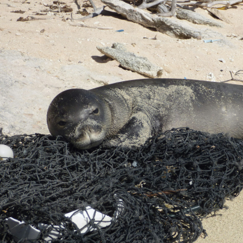

팝업
연구과제
전시생물의 복지와 보전을 위한 다양한 연구를 합니다.
구조 · 치료활동
아쿠아플라넷은 해양수산부로부터 해양동물전문구조·치료기관으로 지정되어 활동 중입니다.
-
뱀머리 돌고래 외상 응급조치 후 이송 치료
-
대상
뱀머리돌고래 Steno bredanensis -
장소
여수시 돌산읍 우두리 내항 -
과정
좌초 개체로 피부 외상이 있어 응급조치 후 이송 치료
-
-
3일간 그물 안에 있던 잔점박이물범 신체검사 진행
-
대상
잔점박이물범 Harbor seal, Phoca vitulina -
장소
제주 서귀포시 성산읍 신양리 -
과정
1. 주민신고로 출동 후 신체검사 진행
2. 기생물 및 기력 부족으로 보호 조치 -
검진
외형에 상처 거의 없으며 약 3일간 그물 안에 있어 기력이 떨어진 것
 -
-
다리에 이물이 있는 붉은바다거북 소독치료
-
대상
붉은바다거북 Caretta Caretta -
장소
강원도 삼척시 장호항 -
과정
이물 제거 및 상처부위 소독 치료
-
-
고래상어 그물망에 긁힌 일부 상처 치료 후 즉시 방류
-
대상
고래상어 Rhincodon typus -
장소
강원도 삼척시 초곡항 -
과정
정치망 혼획 개체로 그물에 일부 긁힌 상처 외 유영 상태 및 활력이 양호하여 현장 즉시 방류
-
-
정치망 내에 들어온 남방큰돌고래 다시 바다로
-
대상
남방큰돌고래 Tursiops aduncus -
장소
제주시 구좌읍 농공단지 -
과정
정치망 내에서 유영하고 있는 것을 발견
-
대상동물
아쿠아플라넷 여수, 제주, 일산, 63은 전시만이 아닌 생물의 복지와 보존을 위하여 노력하고 있습니다.
- 고래 고래류
- 기각류 기각류
- 수달 수달
- 펭귄 펭귄류
- 바다거북 바다거북
- 해마와 해룡 해마와 해룡
- 상어 상어류